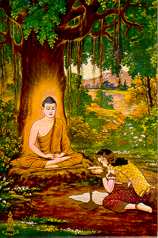
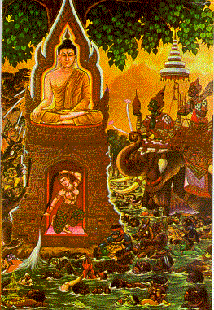

BuddhaSasana Home Page
This document is written in Vietnamese, with
Unicode Times font
| 13 | 14 |
|  |  |
| Sujata offered the Buddha-to-be a
gold bowl full of milk mixed with rice flour and honey. Sujata thought he was a god. After
taking that meal, the Buddha-to-be threw the bowl into the water. Nàng Sujata cúng dường vị Bồ-tát một bát cháo sữa với mật ong. Sujata tưởng Ngài là một vị trời. Sau khi thọ thực, Ngài ném cái bát ấy vào dòng nước (và bát ấy từ từ trôi ngược dòng). |
The Buddha-to-be defeated Vasavatti
Mara, King of Evil, and his companies who attacked him at the Bodhi tree. A goddess of
great beauty emerged from the earth and helped the hero defeat Mara. Then the King Mara
payed him his homage. Bồ-tát chiến thắng Ma vương Vasavatti và đoàn tùy tùng khuấy nhiễu Ngài tại cội cây Bồ-đề. Một vị nữ thần từ lòng đất hiện ra để giúp Ngài đánh bại Ma vương. Sau đó, Ma vương chịu khuất phục, và ca tụng Ngài. |
[Mục Lục][01-02][03-04][05-06][07-08][09-10][11-12][13-14]
[15-16][17-18][19-20][21-22][23-24][25-26][27-28][29-30][31-32]
Source: Post Cards from S. Dhumphakdi & Sons Publisher, Bangkok, Thailand